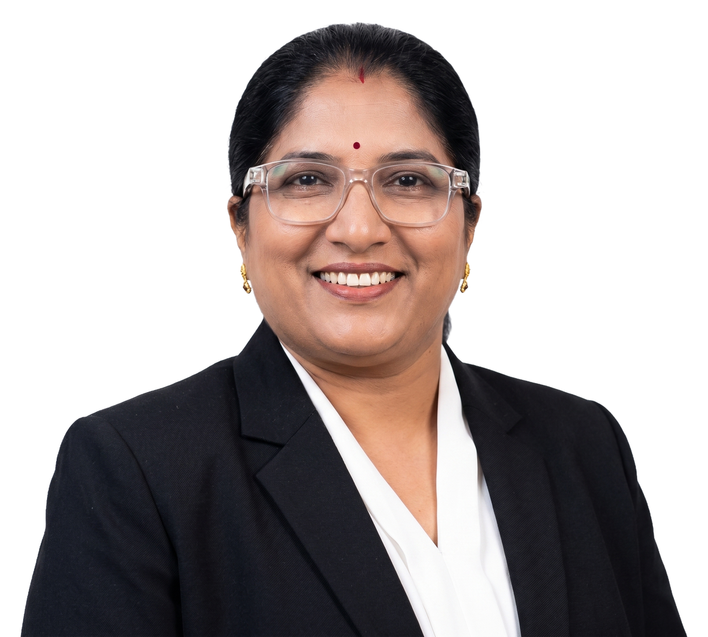
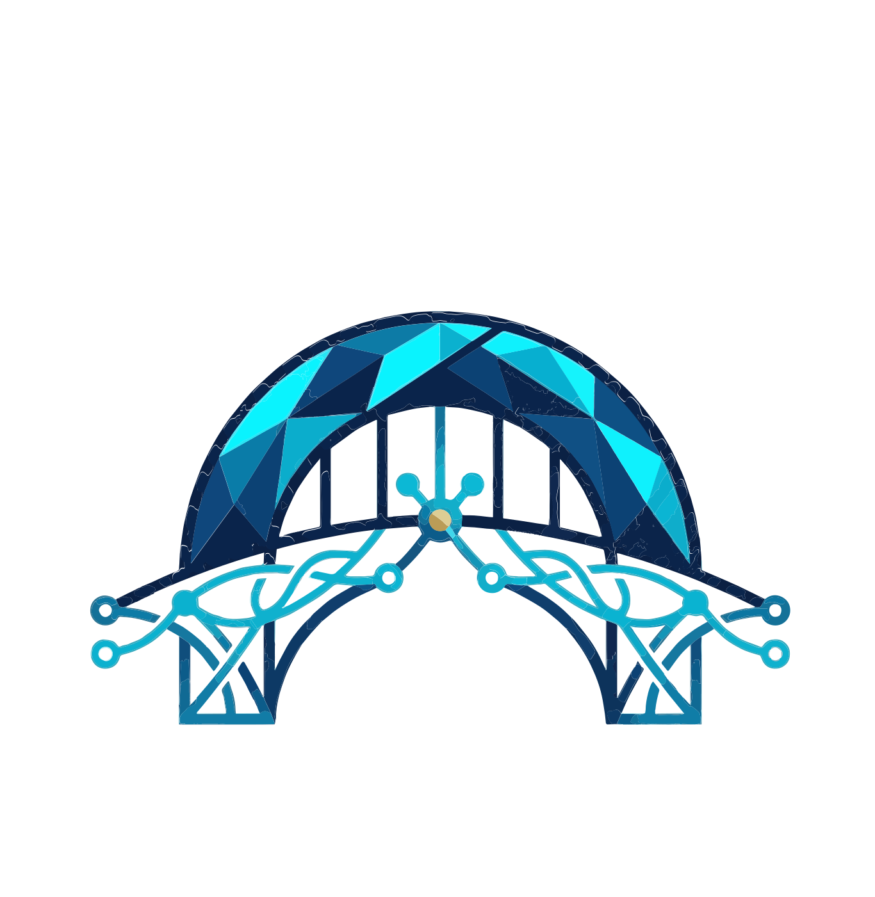

Clinical Enterprise
Fee-based professional therapy and counselling services.
Hyderabad and Vijayawada
Learning & Ability Counselling Centre
Professional counselling, developmental support, speech and behaviour therapy, learning assistance, and family guidance led by Vineela Anney, MHI5712.
- Clinical Director
- Vineela Anney
- Registration / ID
- MHI5712
- Care principles
- Individualised, ethical, confidential

Founder & Clinical Director
Vineela Anney
Psychologist | Hypnotherapist | Counsellor | Speech Trainer | Graphology Practitioner

Social Impact Arm
Foundation-led access programs for families and communities in need.
Institutional model
A clear separation of clinical services and charitable access.
LAC and NBF operate as connected but distinct channels. LAC provides professional clinical services through appointments and structured interventions. NBF extends the same care philosophy into community programs, free camps, education support, and assistance for families facing financial barriers.
Professional clinical care
For clients seeking counselling, therapy, developmental support, learning guidance, and family consultation through a confidential, appointment-based setting.
- Assessment-led support planning
- Individual and family sessions
- Ethical and confidential practice
Therapy + Motivation = Transformation
The work is grounded in patient education, parental involvement, consistency at home, and progress measured through meaningful functional changes.
- Communication and emotional balance
- Behaviour improvement and confidence
- Learning ability and family understanding
Foundation outreach
For underprivileged children, students, women, adults, elderly individuals, and rural families who require access, awareness, and practical support.
- Free counselling and therapy camps
- Education and basic needs support
- Medical and surgical assistance
Clinical services
Specialised support across counselling, learning, development, and family wellbeing.
The centre supports children, adolescents, adults, parents, and families through structured care that respects the person, the family context, and the practical goals of daily life.
Mental health and counselling
Psychological counselling, emotional wellness, anxiety, OCD, ODD, ADHD, PTSD, stress management, and addiction counselling.
Learning and academic support
Learning support for school and college students, SLD support, career guidance, confidence building, and structured study guidance.
Developmental and behavioural care
ASD assessment and support, intellectual disability support, behaviour therapy, child development support, and parent guidance.
Speech, language, and communication
Speech and language therapy, communication skill development, social interaction support, and practical home strategies.
Family and parenting guidance
Family counselling, parenting support, relationship understanding, patience-building, and coordinated family involvement.
Personal development and graphology
Personality development, confidence building, graphology and writing analysis, emotional resilience, and career direction.
Clinical approach
Structured care that keeps the family involved.
Progress is approached as a clinical and family process. Sessions are supported by observation, practical techniques, parent participation, home consistency, and review of functional outcomes.
-
01
Clinical understanding
Concerns, history, strengths, learning context, family needs, and intervention priorities are documented before planning begins.
-
02
Individualised planning
Care is aligned to communication, emotional regulation, behaviour, confidence, learning ability, and family goals.
-
03
Therapeutic intervention
Sessions may include counselling, therapy, speech guidance, behaviour support, hypnotherapy, or family counselling as appropriate.
-
04
Review and reinforcement
Progress is reviewed through practical changes, parent feedback, and consistency of strategies outside the centre.
Neuro Bridge Foundation
Connecting minds. Changing lives.
Neuro Bridge Foundation exists to improve access for families who need counselling, education support, developmental guidance, medical assistance, and mental health awareness but cannot easily afford or reach professional care.
Education support
Stationery, books, learning resources, rural education programs, and support for underprivileged children.
Therapy access
Free counselling services, therapy camps, developmental support, family guidance, and awareness programs.
Medical assistance
Support for financially disadvantaged families facing medical and surgical needs.
Basic needs and donations
Stationery, ration, rice, dal, blankets, clean clothes, and toys for children.
Founder & Clinical Director
Vineela Anney, MHI5712
Psychologist, hypnotherapist, counsellor, speech trainer, and graphology practitioner.
Vineela Anney's professional direction is shaped by clinical training and a deeply personal journey through childhood medical trauma within her own family. That experience created a lasting commitment to families navigating developmental delays, emotional distress, learning difficulties, autism, ADHD, speech challenges, behavioural concerns, and financial pressure.
Her work brings together therapy, counselling, parent involvement, structured guidance, and patient reinforcement. The emphasis is not on quick promises, but on consistent support, practical progress, and dignity for every child, adult, and family served.
Every mind matters. Every life has potential.
Care philosophyCare outcomes
The centre focuses on visible, functional progress.
Communication
Emotional balance
Behaviour improvement
Confidence
Social interaction
Learning ability
Mental strength
Family understanding
Contact
Confidential enquiries and foundation support.
Contact LAC for clinical appointments and professional consultations. Contact NBF for membership, charitable support, donations, rural programs, and community assistance.
Clinical counselling, therapy, developmental support, and family guidance.
Appointments, institutional enquiries, programs, and foundation coordination.
Foundation contributions, memberships, physical donations, and outreach support.
Clinical services and social outreach focus areas.